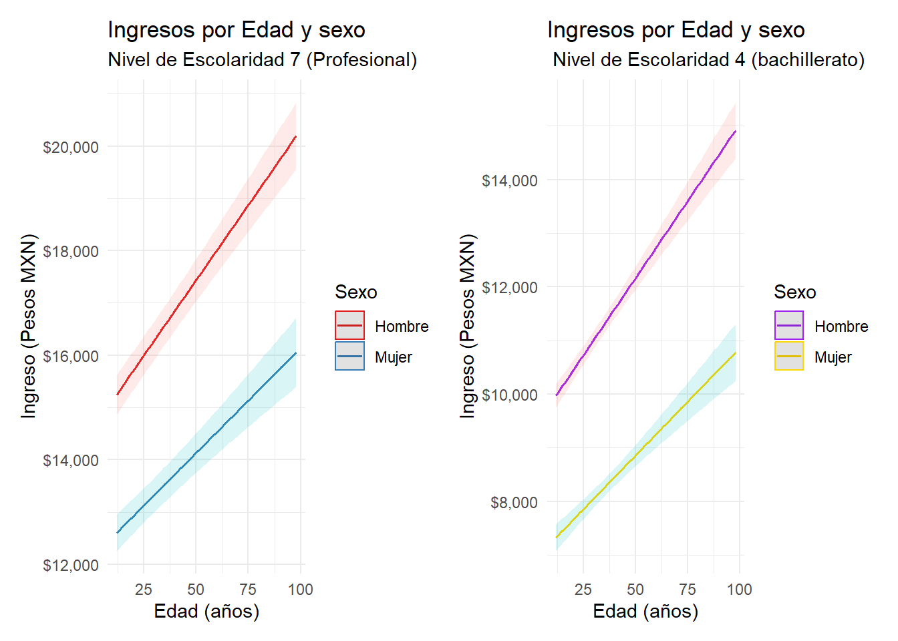

library(dplyr)
library(ggplot2)
library(survey)Modelos de regresión
Introducción
Este proyecto muestra cómo aplicar pruebas estadísticas y modelos de regresión para el cálculo y visualización de relaciones entre variables (tanto numérica como categóricas).
Se trabajará con datos pública de la base del INEGI, por lo que se puede optar poder descargar el archivo desde el repositorio Github o desde la página oficial de microdatos del INEGI.
Al final se dará una breve explicación sobre cómo podemos mejorar la calidad de los modelos de regresión.
Para obtener la base de datos de la ENOE 2025Trimestre 2 pueden acceder al github en este enlace.Como primer paso cargamos las librerías.
Abrimos la base de datos que usaremos (sustituir ruta).
Enoe_2025_T2<-read.csv("C:/Users/USER/Downloads/Bases de datos/INEGI/ENOE SDME 2015 a 2025/conjunto_de_datos_sdem_enoe_2025_2t.csv")Creamos nuestro diseño muestral.
diseno<-svydesign(id=~upm, strata=~est, data=Enoe_2025_T2,
weights=~fac_tri)Nota: Revisar el proyecto de Diseño de muestras complejas para entender los efectos de la factorización enla muestra.
#Como primer paso creamos un filtro para analizar sólo aquellas observaciones que tengan un ingreso>0
diseño_ingresos_filt<-subset(diseno, ingocup >0) El primer modelo de regresión consiste en establecer un relación entre el ingreso (variable continua) en función del sexo (categórica) y la edad (discreta).
modelo1<-svyglm(ingocup~sex+ eda, design = diseño_ingresos_filt) #Establecemos un regresión lineal ponderada entre ingreso, sexo y edad.
summary(modelo1)
Call:
svyglm(formula = ingocup ~ sex + eda, design = diseño_ingresos_filt)
Survey design:
subset(diseno, ingocup > 0)
Coefficients:
Estimate Std. Error t value Pr(>|t|)
(Intercept) 13516.324 181.651 74.408 <2e-16 ***
sex -2467.636 84.225 -29.298 <2e-16 ***
eda 4.890 3.106 1.575 0.115
---
Signif. codes: 0 '***' 0.001 '**' 0.01 '*' 0.05 '.' 0.1 ' ' 1
(Dispersion parameter for gaussian family taken to be 76674795)
Number of Fisher Scoring iterations: 2Los resultados presentan el cambio estimado en el ingreso por cada unidad de cambio en la variable predictora, manteniendo las otras varaibles constantes.
Intercepto= 13,516: para una persona con edad = 0 que pertenece al grupo base de sex= 1 (hombre).
sex= -2,467.64:diferencia promedio en el ingreso entre el grupo sex. Indica que el valor para sex=2 (mujeres) tiene 2.467.64 unidades monetarias menos de ingreso que el grupo base.
eda=4.89: Por cada año adicional de edad el ingreso aumenta en 4.89 unidades monetarias, manteniendo constante la varible sex. *Se establecen erroes estándar para el cálculo de los estimadores.
Lo más sobresaliente del modelo son los niveles de significancia. Aunque la variable categórica sex presenta un nivel de significancia importante, ya que es mucho menor a alpha =0.05, la variable discreta eda no es estadísticamente significativa por su alto valor p. Implicaciones: la variable sex, en este modelo, tiene influencia sobre la variable ingreso, por lo que no podemos descartar una dependencia entre variables; caso contrario, la variable edad, aquí, no se presenta como significativa para la relación de dependencia con los ingresos. Un posterior modelo permitirá decidir si la variable edad es necesaria para el análisis de regresión.
Para continuar con el análisis, cremos otro modelo de regresión que añade ahora la variable educación:
modelo2<- svyglm(ingocup~sex+ eda+ as.factor(cs_p13_1), design= diseño_ingresos_filt)
summary(modelo2)
Call:
svyglm(formula = ingocup ~ sex + eda + as.factor(cs_p13_1), design = diseño_ingresos_filt)
Survey design:
subset(diseno, ingocup > 0)
Coefficients:
Estimate Std. Error t value Pr(>|t|)
(Intercept) 7098.289 244.412 29.042 < 2e-16 ***
sex -3136.144 78.165 -40.122 < 2e-16 ***
eda 51.232 3.212 15.951 < 2e-16 ***
as.factor(cs_p13_1)1 1859.763 1080.139 1.722 0.0851 .
as.factor(cs_p13_1)2 2078.408 138.603 14.995 < 2e-16 ***
as.factor(cs_p13_1)3 3926.907 145.387 27.010 < 2e-16 ***
as.factor(cs_p13_1)4 5580.124 164.037 34.018 < 2e-16 ***
as.factor(cs_p13_1)5 6085.946 989.537 6.150 7.88e-10 ***
as.factor(cs_p13_1)6 5916.587 222.050 26.645 < 2e-16 ***
as.factor(cs_p13_1)7 10863.844 239.163 45.424 < 2e-16 ***
as.factor(cs_p13_1)8 18664.603 761.720 24.503 < 2e-16 ***
as.factor(cs_p13_1)9 21900.029 1330.057 16.465 < 2e-16 ***
as.factor(cs_p13_1)99 4031.194 646.038 6.240 4.47e-10 ***
---
Signif. codes: 0 '***' 0.001 '**' 0.01 '*' 0.05 '.' 0.1 ' ' 1
(Dispersion parameter for gaussian family taken to be 64366760)
Number of Fisher Scoring iterations: 2Del modelo se deduce lo siguiente:
Los estimadores:
Intercepto 7,098.28 cuando todos los demás valores son 0 (1= hombre para sex).
Sex: diferencia de -3136.14 entre base (hombres) y mujeres cuando todos los demás valores son igual 0.
Eda: incremento de 51.2 unidades monetarias de ingreso por unidad de edad.
Valores P siginicativos para todas las interacciones, excepto, posiblemente, nivel de educación =1 (primaria) con p value= 0.0851.
Conclusión: al integrar la variable ordnial educación en este nuevo modelo cambia la importancia de la variable discreta edad, haciendo que su nivel de significancia permita establecer relaciones de dependencia.
Para finalizar, creamos un nuevo modelo.
modelo3<-svyglm(ingocup~sex*eda+as.factor(cs_p13_1), design = diseño_ingresos_filt)
summary(modelo3)
Call:
svyglm(formula = ingocup ~ sex * eda + as.factor(cs_p13_1), design = diseño_ingresos_filt)
Survey design:
subset(diseno, ingocup > 0)
Coefficients:
Estimate Std. Error t value Pr(>|t|)
(Intercept) 6166.840 349.951 17.622 < 2e-16 ***
sex -2437.710 196.438 -12.410 < 2e-16 ***
eda 75.008 7.564 9.916 < 2e-16 ***
as.factor(cs_p13_1)1 1843.711 1070.635 1.722 0.085072 .
as.factor(cs_p13_1)2 2065.019 138.978 14.859 < 2e-16 ***
as.factor(cs_p13_1)3 3912.542 145.723 26.849 < 2e-16 ***
as.factor(cs_p13_1)4 5552.099 164.392 33.774 < 2e-16 ***
as.factor(cs_p13_1)5 6157.346 990.258 6.218 5.14e-10 ***
as.factor(cs_p13_1)6 5935.915 221.930 26.747 < 2e-16 ***
as.factor(cs_p13_1)7 10828.837 240.030 45.115 < 2e-16 ***
as.factor(cs_p13_1)8 18638.020 761.263 24.483 < 2e-16 ***
as.factor(cs_p13_1)9 21875.225 1336.254 16.371 < 2e-16 ***
as.factor(cs_p13_1)99 4017.297 645.403 6.224 4.93e-10 ***
sex:eda -17.425 4.752 -3.667 0.000247 ***
---
Signif. codes: 0 '***' 0.001 '**' 0.01 '*' 0.05 '.' 0.1 ' ' 1
(Dispersion parameter for gaussian family taken to be 64352082)
Number of Fisher Scoring iterations: 2Conclusiones
En este último modelo el cambio más importante es asumir el efecto de la interacción entre sex y eda, y no entre la eda y el ingreso, siendo que el resultado del primer modelo marcó una escaza significancia para asumir la interacción entre estas útlimas variables. Lo que se busca es robustecer el modelo para integrar los resultados de las interacciones más fuertes para tener una mejor representación de las relaciones entre variables. Si se observa, esto arroja un cambio en los estimadores que nos puede proporcionar información más relevante para el análisis de los ingresos en México. Como ejercicio final podemos hacer la representación gráfica de la relación lineal para ilustar cómo el último modelo nos permite visualizar la relación entre las varaibles.
library(ggeffects)
#creamos el gráfico
#Elgráfrico muestra la diferencia de ingresos para las diferentes edad agrupadas por sexo, manteniendo la escolaridad constante en 7(licenciatura)
library(scales)
library(patchwork)
#Para gente con estudios profesionales
# Se fija la escolaridad (cs_p13_1) en un nivel, por ejemplo, el Nivel 7.
predicciones_interaccion1 <- ggpredict(
model = modelo3,
terms = c("eda [all]", "sex", "cs_p13_1 [7]")
)
grafico_interaccion1 <- plot(predicciones_interaccion1) +
labs(
# Título que resalta la diferencia (hallazgo clave)
title = "Ingresos por Edad y sexo",
# Subtítulo para añadir el contexto de la escolaridad (profesionaliza el gráfico)
subtitle = "Nivel de Escolaridad 7 (Profesional)",
x = "Edad (años)",
# Eje Y más específico
y = "Ingreso (Pesos MXN)",
color = "Sexo"
) +
theme_minimal() +
# **Nueva capa para formato de eje Y**
scale_y_continuous(labels = label_number(big.mark = ",", prefix = "$")) +
scale_color_manual(
values = c("1" = "#E41A1C", "2" = "#377EB8"),
labels = c("1" = "Hombre", "2" = "Mujer")
)
#Para gente con educación bachiller
# Se fija la escolaridad (cs_p13_1) en un nivel 4.
predicciones_interaccion2 <- ggpredict(
model = modelo3,
terms = c("eda [all]", "sex", "cs_p13_1 [4]")
)
grafico_interaccion2 <- plot(predicciones_interaccion2) +
labs(
# Título que resalta la diferencia (hallazgo clave)
title = "Ingresos por Edad y sexo",
# Subtítulo para añadir el contexto de la escolaridad (profesionaliza el gráfico)
subtitle = " Nivel de Escolaridad 4 (bachillerato)",
x = "Edad (años)",
# Eje Y más específico
y = "Ingreso (Pesos MXN)",
color = "Sexo"
) +
theme_minimal() +
# **Nueva capa para formato de eje Y**
scale_y_continuous(labels = label_number(big.mark = ",", prefix = "$")) +
scale_color_manual(
values = c("1" = "purple", "2" = "gold"),
labels = c("1" = "Hombre", "2" = "Mujer")
)
grafico_interaccion1|grafico_interaccion2
Este útlimo gráfico nos permite entender la relación lineal de la variable dependiente (ingreso) y las variables independientes (sexo, nivel educativo y edad).
Para la visualización final se utilizó un patchwork que muestra la comparativa entre dos regresiones con diferentes grados de educación para ver cómo la variable ingreso se presenta diferenciadamente entre uno y otro, la cual nos incita a pensar en el peso de la educación para el aumento del ingreso y en el sesgo que presenta la edad y el sexo.